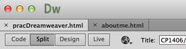
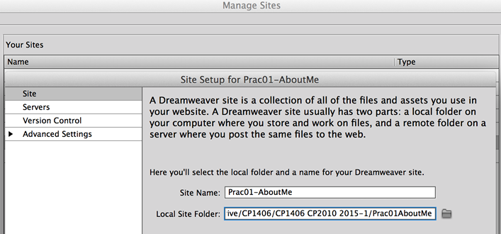
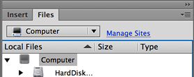
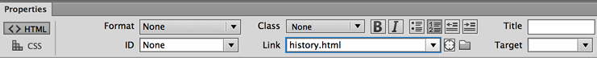
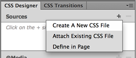
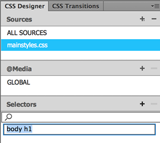
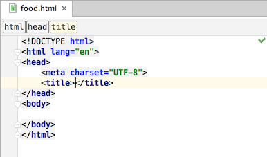
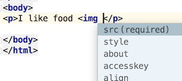

Practical - Good Websites & Dreamweaver
Before we start making things, we're going to do an exercise focusing on the question, "what makes a good website?"
Pair up with the person next to you (or make a group of 3) and write down the attributes that you think good websites have.
We will then collate and discuss these as a group and determine our priorities...
Note
The prac work in this subject uses Adobe Dreamweaver (and later Photoshop) in places, but you may use whatever you like to build websites in the subject. We highly recommend PHPStorm, which you can find a licence for on LearnJCU or the free open source tool Brackets, both of which should be available on the JCU computers. Most other tools like this are code editors that are great for writing HTML, CSS and JavaScript, but they are not WYSWIG (What You See Is What You Get) editors like Dreamweaver.
SitePoint has a video course on Brackets here.
This prac is not the sole resource for Dreamweaver learning. Please refer to Dreamweaver Help (F1), SitePoint Premium videos, other sites, etc...
The Help for Dreamweaver has a lot of useful tutorials - check it out some time soon.
The screenshots in this walk-through are from a Mac version, but you shouldn't have any trouble using this prac with a Windows version.
Aims:
- To get familiar with the Dreamweaver interface.
- To learn to create a defined Site to enable site management (not just single file editing).
- To improve your understanding of HTML and CSS by working in Split View.
- To use headings, lists, paragraphs, images, links and styles to create a small site containing basic Web pages.
- To find suitable resources for learning more.
- To want to learn more!
Get Started:
To gain experience with Dreamweaver, you are going to make a basic 3-page website about yourself, like a portfolio. Follow the instructions, but get interested and do extra stuff if you can.
- Run Dreamweaver.
It will either start with a blank screen (and you use the File menu to create a new page), or it will have a launch window with options for creating a new page. If it starts with a tour, press Escape to get out of it.
- Create a new, blank HTML page (no template, just start blank), by:
Clicking on the File menu and choosing New...
- Arrange the windows... You should see a drop-down option at the top right that says "Extract", or you can choose Window > Workspace Layout... either way, change this to "Design".
- Click on Split so you see Code (HTML) and the Design canvas at the same time. You can swap this view between horizontal and vertical in the View menu.
Please ALWAYS use this view (unless you temporarily need to use another view).
It will help you learn how the HTML and CSS code works without having to waste time writing HTML directly.
This is rule #2 for using Dreamweaver - always use Split view

- Type a few things in the Design side and watch what happens in the Code view... magic!
- Look around at the different panels/windows and think about what they might be used for. If you can't see the properties panel (usually down the bottom), select it from the Window menu.
Wait!
Important
You will rarely want to make a stand-alone file that has no other files associated with it. Mostly you will work on a site with multiple, related files (pages, CSS, images, scripts...).
Dreamweaver helps you by letting you define a site. Please ALWAYS work in a defined site.
Many problems (incorrect links mostly) are caused by not working in a defined site.
A site definition is just information about the site, not the site contents itself. Unless you're on your own computer, Dreamweaver will not remember the site definition, so you have to set it up each time, but it only takes 30 seconds, so do it every time!
- From the Site menu, choose New Site.
- Give your site a name, like Prac01-AboutMe
- In Local Site Folder, select a folder on your machine or USB drive - making a new empty folder for your site.
Please make a new folder. Don't use an existing folder like the desktop, or the items on the desktop will become part of your site.

- That's all we need for now. Later we can set more options like a remote server for uploading to.
- If you ever see "Manage Sites" in blue in your Files panel it means you are not working in a defined site...

Stop and correct that - choose an existing site or define a new one. Otherwise, you can end up with problems due to incorrect file management - like broken links.
You will have to do this every time you launch Dreamweaver on lab machines (on your own computer it will remember your sites).
This is rule #1 for using Dreamweaver - always work in a defined site.
Home Page
- Spend a few minutes making the first page, containing at least:
- Your name as a Heading 1 at the top
- A photo of you (or someone like you)
First save an image file into
the root directory of your site (or in a sub-folder called images), then you can insert images by choosing Image from the Insert menu, or pressing the shortcut key, or using the Insert panel if you like that sort of thing.
- A paragraph that introduces you very briefly.
- Save this page as
index.html
(It should be EXACTLY that - not Index.html or index.htm or something else.)
We'll talk about why later on, but it's the default home page file for Apache servers.
- Preview this Web page by pressing Alt+F12, or click the button that looks like a globe up the top.
Does it look any different in the browser than it does in Dreamweaver? (Sometimes it does, so use this feature to test your work in addition to Dreamweaver's Live view. Don't trust Dreamweaver to show you what it looks like in a browser.)
Rather than using this every time you want to see it in a browser (you could end up with lots of browser windows open), you can just save the file each time, switch to the browser (Alt+Tab) and press reload (Ctrl+R). Don't close your browser.
It's quicker that way.
More Pages
You are going to make two more pages - History and Study.
Start these off very briefly, as the content is not the most important thing, but we need some content to practise formatting it.
- Create a second page (new file) for History and give it a similar title and, at least, appropriately formatted (lists, paragraphs?):
- where you were born
- past jobs
- your first memory of using the Web
- Save this page as
history.html - It's best not to use spaces in any filenames for the Web, and they should always be logical names, not page2.html, which you won't recognise later.
- Give each page a proper title (see the Title text field in the Dreamweaver interface). A good option is to include both the page name and the site name, e.g. About Adam - History.
Now we need to make links...
- On the home page, down the bottom, type History, select that text, then make it into a link to your History page.
You can make this link a number of ways:
... try each of these methods at least once with the other links...
- Type the link (filename) in the Link box in the properties panel.

- Click on the file browser button next to the Link box and choose the file.
- Drag the cool little target icon next to the Link box and drag the arrow to the file in your Files panel to the right.
- Make a link on the History page to your home page. Great.
- Now create your Study page, with a list of your current subjects and your study goal - what you hope to achieve with your course.
- Create basic text links between each page so you can get to every page from any page in your site.
- Test the whole site (every link on every page) in your Web browser.
CSS
... We will learn lots more later, but let's get started with very basic CSS already...
As you should know, the basic rule is that you use HTML for your logical document structure - what it is, e.g. paragraphs are <p> and main headings are <h1>, then you use CSS for your visual display - what it looks like.
- Let's start with the heading on the home page.
Click on your main heading, then find the CSS Designer panel, find the little + icon next to Sources and click on it to add a new style sheet file.
- Give your new CSS file a logical name like
mainstyles.css and save it.
- Then select this file in the Sources section and click the + button below next to Selectors.
body h1 should then be selected automatically for you, because you clicked on the heading before adding the new rule. Delete the word body and press Enter.- This results in a whole bunch of CSS properties appearing at the bottom of the CSS Designer window.
Spend a while changing fonts and other things, but don't get too carried away!
- You can re-style any existing HTML tags by doing this. The one we have done will apply to any
h1 (heading 1) tags in this page, not just the one we selected.
- Now create a new style in this sheet for the
body and change the (default) font to something you like that suits the content.
Reuse those styles
- We want all 3 of our pages to use this same style sheet, so we need to link them up as well...
Open
or switch to the other pages to edit them, then click the + button for Sources, click "Attach Existing CSS File" option then choose the file we made earlier, mainstyles.css (or whatever you called it).
You should see the style applied to the page.
- Do this for all of your pages, then use the Save All option from the File menu to save any files you've edited, and preview the site in a browser.
Notice that the styles you defined now apply to all pages in the site. Nice.
- Dreamweaver just added a line of HTML code to your
<head> section, so look at the source code for your page (near the top) to find the newly added <link> tag.
This means that the HTML page is linked to this style sheet and will display according to the styles in that file.
More CSS - Code
Let's take a quick look behind the scenes...
- For any of your pages, you will now see a new option up the top where you can choose to view the HTML code or CSS code. Click to view the CSS.
- You can enter CSS code directly in here. Position your cursor just to the right of the last semi-colon inside the body style and press Enter.
Dreamweaver brings up a drop-down list with every CSS property it knows.
- Start typing background-color and choose it (you can press Enter to choose the one that's highlighted), then choose the colour palette from the next list that pops up (down).
Save and check this out (your pages should all have the same background colour now).
- Remember we were going to get rid of the blue border for image links (which you might only see in older browsers)... so click on the first simple image link you made earlier.
- Now choose the Selectors + button again.
- Modify the selection to "a img" which would select all images (img) inside anchor (a) tags
- In the properties section below, choose Border from the top icons (hover over to see what each one is), then scroll down to find border-style and choose none.
Your image borders should be gone for all images that are links.
Keep going along doing what you can and repeating what you've learned in different ways until you have a 'finished' site.
Repetition will really really really help you get used to this sort of thing, so this week, try making two more complete, simple websites like this one, using the techniques you have learned today and any new ones you can pick up in your research.
Rinse; repeat.
Make sure you save your site files, as you will need them again next week.
★Remember!★
There are two important rules for working in Dreamweaver:
- Always work in a defined site
- Always use split view
Now try PHPStorm
If you have used Dreamweaver for all of this, have a go at using PHPStorm to make one new page using HTML code and link it in to your simple website.
You will make a page for your favourite foods.
- Launch PHPStorm.
If this is on your own computer, download it from the PHPStorm website
You can sign up for free JetBrains licences (including PHPStorm, IntelliJ, PyCharm…) at: https://www.jetbrains.com/shop/eform/students Make sure to use your JCU email address.
Then enter your account details when you first run PHPStorm to get full access to the software.
- You don't need a "project", just choose "Open" and navigate to the folder where your new website is.
- Create a new HTML file, call it food.html
You will notice that PHPStorm made a file with existing "boiler plate" HTML code, which is nice. 
- Fill in the title element at the top, then start adding content inside the body tag...
You will notice that each time you open a tag, the editor adds the closing tag for you. This and many other nice features make editing code with a good IDE like this much nicer than using a plain text editor.
- Add some brief details about your favourite foods, then get one photo of some nice food. Try freeimages.com to find some free, non-copyright images - but don't spend more than 2 minutes finding images.
Save your image in the same folder as your other image(s) for the site.
Note: EVERYTHING must be under your root directory, but you can have subdirectories for things like images.
-  Now when you add HTML to show your image, note all the things PHPStorm can auto-complete for you... as you type, press Enter as soon as it comes up with the item you want. E.g. type <img and when you press space you'll see a drop-down suggesting to add src so press Enter.
Then you get a drop-down of files to choose from. Add height and width attributes and notice that the values are pre-filled...
just press Enter... the good news is, it's always right! It won't offer attributes or values that aren't valid.
- Add a link back to your home page using the <a> tag, plus links to the Food page from the rest of your site, and test everything.
Complete and fix it until it makes you feel very happy.